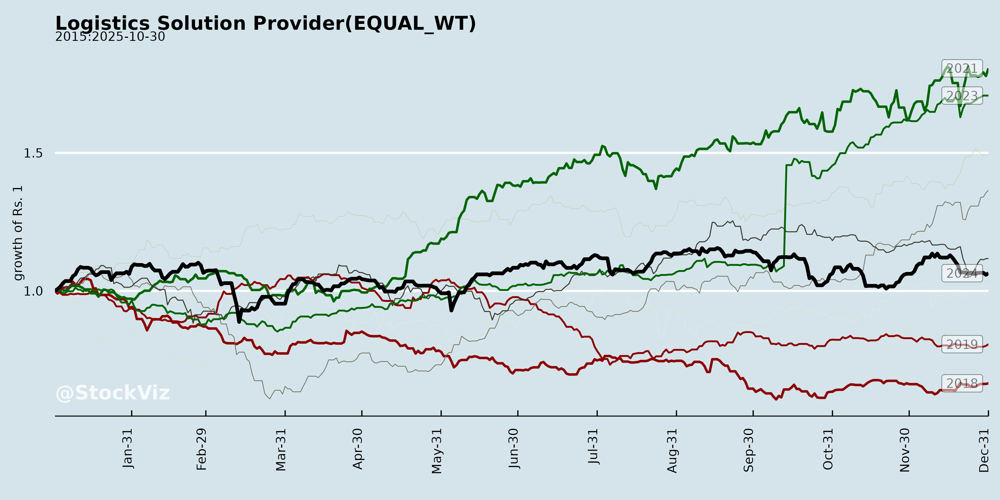
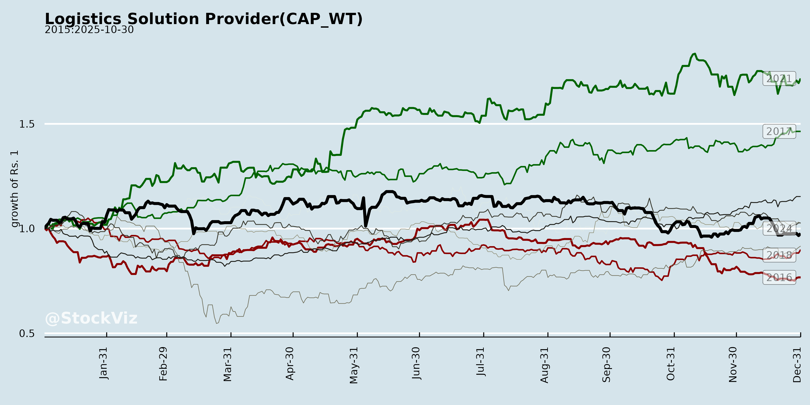
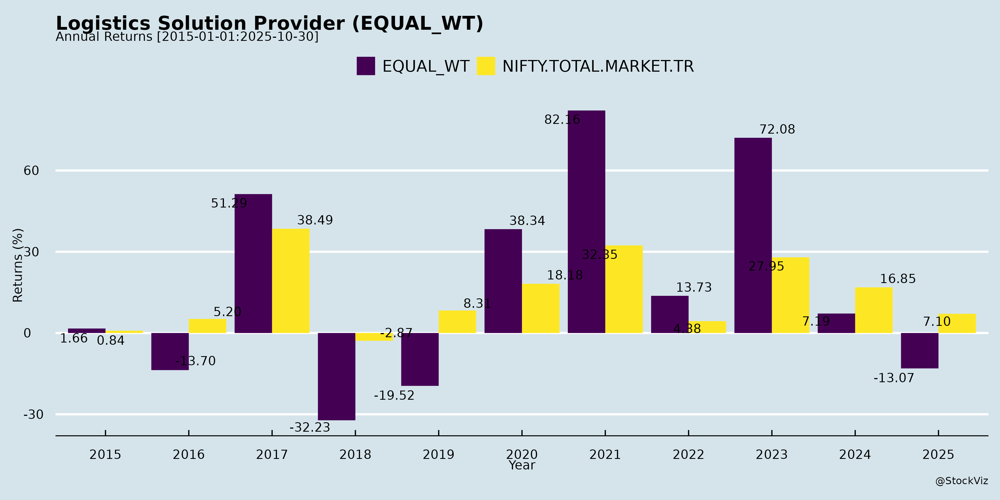
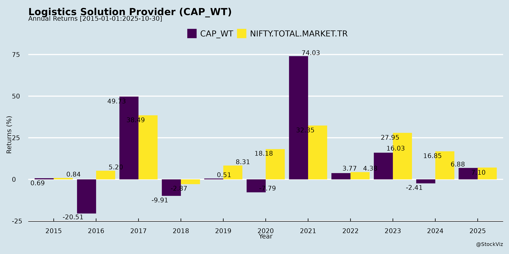
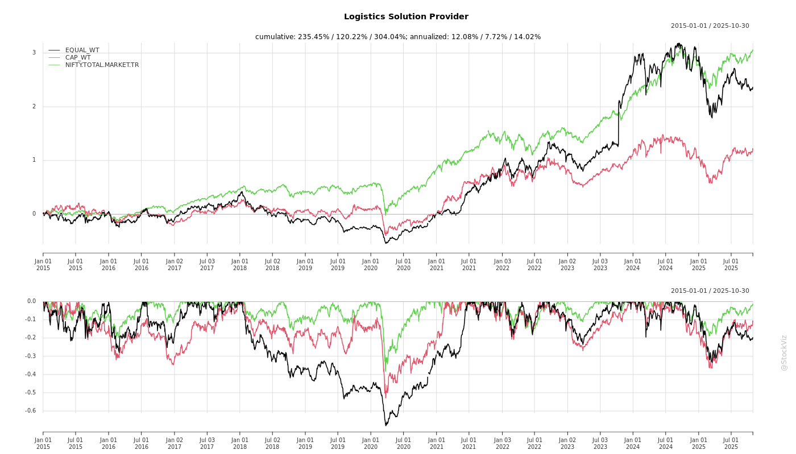
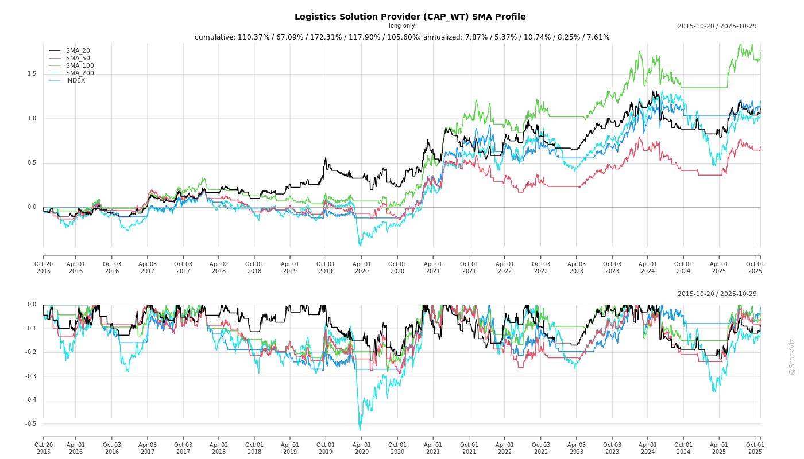
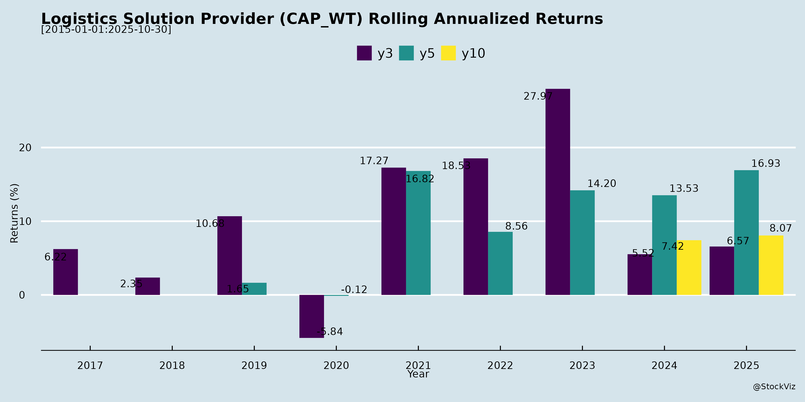

Logistics Solution Provider
Industry Metrics
February 20, 2026
Annual Returns




Cumulative Returns and Drawdowns

SMA Scenarios


Current Distance from SMA
Rolling Returns

Market Cap
EBIT (% of Industry Total)
Revenue (% of Industry Total)
AI Summaries
Analyst
asof: 2025-11-30
Summary Analysis: Indian Logistics Solution Providers (Based on Q2/H1 FY26 Disclosures)
The Indian logistics sector, encompassing express, multimodal, 3PL/4PL, warehousing, and forwarding players (e.g., CONCOR, Delhivery, Blue Dart, TCI, TVS SCS, VRL Logistics, Gateway Distriparks, TCI Express, Western Carriers), shows resilience amid macro challenges. Revenue growth is modest (4-6% YoY H1), with EBITDA margins stable at 6-12% but pressured in forwarding. Volumes grew 2-10% in segments like domestic rail/multimodal, offset by EXIM softness. Key themes below:
Headwinds (Short-term Pressures)
- GST Rate Cuts & Disruptions: Temporary volume dips (e.g., 11% YoY tonnage decline at VRL; pauses in manufacturing supplies at TCI Express, Blue Dart). Spillover effects into Oct/Nov, but expected recovery.
- Pricing & Margin Compression: GFS margins fell to 2-4% (TVS SCS) due to rate pressures; employee costs up 18-40% YoY (VRL, Western Carriers); fuel/toll hikes (Blue Dart, TCI Express).
- EXIM/Trade Headwinds: US tariffs reduced exports 4-5% (Gateway); global freight rates volatile but elevated vs. pre-COVID.
- Volume Mix Shifts: Surface/B2B growth muted (2-5% vs. 17-30% B2C/e-com at Blue Dart, TCI Express); MSME slowdown.
- Operational Costs: Higher maintenance, weather disruptions, power cuts (Snowman); working capital days up to 119 (Western Carriers).
Tailwinds (Supportive Factors)
- Festive & Policy Boost: Early festivals drove 10-30% e-com/ground growth (Blue Dart, VRL); GST cuts expected to spur consumption/MSME recovery.
- Infrastructure Ramp-up: DFC near-completion (96% Western DFC by Mar’26; Gateway, Western Carriers); new hubs/automation (Blue Dart Pataudi hub, TCI Express Mumbai sorting).
- Network Expansion: 10-35 new branches/hubs (TCI Express, VRL, CONCOR); capex INR30-160 Cr H1/H2 (VRL, Western Carriers, Snowman).
- Diversification: Multimodal/rail up 25% QoQ (Western Carriers domestic TEUs); pharma cold chain, EV/solar/defense verticals (TCI Express).
- Debt Reduction & Cash Flows: Net debt down (Western Carriers to INR8 Cr; debt-free TCI Express); strong FCF (TVS INR105 Cr H1).
Growth Prospects (Medium-Term Opportunities)
- EXIM Revival: FTAs (UK/EU/US/NZ/Australia) to boost exports (Gateway, Western Carriers); port capacity to 10,000 MMT by 2047; TEU growth 10-15% targeted.
- Domestic/Multimodal Surge: Rail/domestic up 25% QoQ (Gateway Ankleshwar, Western Devaliya MMCT); sector CAGR 10-15% to USD73 Bn by 2030 (KPMG).
- E-com/Last-Mile: 17-30% growth (Blue Dart ground e-com); ONDC, digital commerce tailwinds.
- Order Pipelines: INR6,200 Cr (TVS); new wins INR200 Cr/Q (TVS, CONCOR); B2C to INR100 Cr in 2 yrs (TCI Express).
- Capex-Led Expansion: Warehousing (Snowman INR100-150 Cr/yr), automation (TCI Express INR150 Cr remaining); 8-10% volume growth targeted FY26 (VRL, TCI Express).
Key Risks
- Geopolitical/Trade Volatility: US tariffs, global fragmentation delaying EXIM recovery (4-8% volume risk).
- Cost Inflation: Fuel (25-28% of costs), employee hikes, tolls; EBITDA dilution if volumes lag.
- Competition Intensity: Express/road undercutting; B2C pricing wars.
- Macro/Demand Risks: MSME slowdown, monsoon disruptions; elongated WC cycles (119 days).
- Execution Risks: Capex delays (e.g., TCI automation mid-FY27); over-reliance on EXIM (50-60% volumes).
Overall Outlook: Sector poised for 8-12% FY26 growth post-H1 softness, driven by infra (DFC/ports), policy (GST/FTAs), and domestic demand. Margins to stabilize/improve at 12-15% with volumes >10%; focus on multimodal/debt-light models mitigates risks. Bullish on leaders with strong pipelines/networks (e.g., TVS, Gateway, TCI Express).
Financial
asof: 2025-12-02
Analysis of Indian Logistics Sector (Based on Q3 FY25 / Q1 FY26 Financial Results)
The provided documents represent financial results, announcements, and audit reviews from key Indian logistics players (e.g., CONCOR, Delhivery, Blue Dart, TVS Supply Chain, VRL Logistics, Sindhu Trade Links, Gateway Distriparks, TCI Express, Navkar Corp, Western Carriers, etc.) for Q3/Q1 periods ending Dec 2024/Jun 2025. This analysis synthesizes sector trends for an “Indian Logistics Solution Provider” (e.g., multimodal logistics firms handling EXIM/domestic cargo, CFS/ICD ops, express/cold chain). Overall, the sector shows resilient revenue growth amid profitability pressures, driven by volume recovery but hampered by regulatory/tax headwinds.
Tailwinds (Positive Drivers)
- Revenue Momentum: Strong top-line growth across most firms (e.g., CONCOR +2.5% QoQ, Blue Dart +7% YoY Q1 FY26, VRL +12% YoY Q3 FY25, TCI Express stable at ~₹300 Cr/quarter). EXIM/domestic segments resilient; Delhivery Q3 revenue +8% QoQ to ₹2,378 Cr.
- Profitability Turnaround: Shift to black ink—Delhivery PAT ₹25 Cr (vs. prior losses), TCI EPS ₹5.39 (Q3), Blue Dart PAT ₹47 Cr (Q1 FY26). Cost optimizations (e.g., depreciation method changes in Delhivery/CONCOR reducing expense by ₹1,593 Cr/₹1.5 Cr).
- Capital Infusion & Expansion: IPO proceeds (Western Carriers ₹3,629 Cr utilized for capex/debt repayment), dividends (CONCOR ₹1.6/share, TCI ₹3/share), acquisitions (Gateway’s Snowman control for cold chain).
- Operational Efficiencies: Asset life extensions (CONCOR LNG trucks 8→15 yrs), network builds (Blue Dart’s Bijwasan hub, TCI Singapore sub), multimodal push (rail/ICD growth).
Headwinds (Challenges)
- Regulatory & Tax Pressures: Widespread litigations—Gateway’s benami probes (₹866 Cr land advances attached), SEIS disputes (₹170 Cr at risk), IT surveys/demands (₹95 Cr+ across firms), land license fees (CONCOR ₹111 Cr provisional). Qualified audit opinions in multiple reports.
- Margin Squeeze: High op-ex/finance costs (Navkar losses ₹268 Cr Q3, TVS ₹6 Cr PAT but discontinued ops drag). Depreciation/fuel volatility; Delhivery EBITDA margin ~1%.
- Discontinued/Sale Losses: Navkar/TVS impairments (₹81 Cr/₹73 Cr exceptional losses), asset sales (VRL air passenger biz).
- Macro/External: Volume softness in some (Sindhu coal trading losses), forex/debt burdens (finance costs 2-5% of revenue).
Growth Prospects
- High Potential (10-15% CAGR Projected): Multimodal/EXIM boom (CONCOR EXIM ₹1,401 Cr Q1), cold chain (Gateway-Snowman), express (TCI/Blue Dart ₹300-1,400 Cr/quarter). ICD/CFS expansions (Navkar, Western Carriers Morbi yard).
- Capex Tailwind: ₹1,000s Cr from IPOs (Western ₹1,465 Cr unspent capex), dividends signal confidence. International (TCI Singapore ₹7.5 Mn investment).
- Efficiency Gains: Tech/automation (Delhivery SLM depreciation cut), LNG/rail focus (CONCOR). Sector tailwinds: PLI schemes, infra push (Gati Shakti).
- M&A/Partnerships: Gateway’s Snowman (cold chain scale), JSW-Navkar stake sale (70% equity shift signals consolidation).
Key Risks
| Risk Category | Details | Mitigants |
|---|---|---|
| Regulatory/Legal | Tax/SEBI probes (benami, SEIS, IT surveys; ₹100s Cr exposure in Gateway/CONCOR/Delhivery). Provisional attachments/demands. | Legal opinions, appeals (e.g., Gateway filed under Vivad se Vishwas); provisions made (₹400 Cr Gateway). |
| Financial | Debt/finance costs (2-7% revenue), forex volatility (international ops). EBITDA margins 5-15%. | Debt prepay from IPOs (Western), MAT credits (₹19 Cr Gateway recoverable). |
| Operational | Infra delays (land fees, rail access), competition (Delhivery/Blue Dart volumes flat QoQ). Discontinued ops losses. | Diversification (cold chain/multimodal), asset sales (₹2 Cr Gateway land). |
| Market | Volume cyclicality (EXIM slowdowns), fuel/inflation. | Network expansions, dividends for shareholder confidence. |
| Execution | Capex delays (IPO unspent ₹1,757 Cr Western), M&A integration (Snowman). | Board approvals, phased investments. |
Summary Outlook: Sector poised for 12-15% growth FY26 (volume recovery, infra), but near-term volatility from regs (monitor Gateway/CONCOR litigations). Tailwinds from capex/digital outweigh headwinds; focus on debt reduction/multimodal for 10-12% ROE potential. Risks skewed regulatory (20-30% PAT impact if adverse). Recommended: Diversify revenue, strengthen compliance.
General
asof: 2025-11-30
Analysis of Indian Logistics Sector for Solution Providers
Based on the provided regulatory filings from key players (e.g., Delhivery, TCI Express, TVS Supply Chain, Navkar, CONCOR, VRL Logistics, etc.), the Indian logistics sector shows resilience amid e-commerce growth and festive demand, but faces integration and regulatory hurdles. Below is a structured summary of headwinds, tailwinds, growth prospects, and key risks for an Indian Logistics Solution Provider.
Tailwinds (Positive Factors)
- Robust Volume Growth: Delhivery reported 32% YoY Express Parcel growth (246Mn shipments) and 12% YoY PTL tonnage (477K MT), driven by e-commerce, D2C/SME (40% YoY), and festive peaks (100Mn+ monthly orders). Post-GST rate changes boosted September volumes with spillover into October.
- Strategic Acquisitions & Synergies: Delhivery’s Ecom Express integration enhances market share; TCI Express acquiring TCI Global Singapore Pte. Ltd. (SGD 18K) for regional foothold; TVS SCS funding overseas subs (INR 250Cr) for expansion.
- Revenue & Profitability Momentum: Delhivery’s service revenue up 16% YoY (Rs2,546Cr), EBITDA Rs150Cr (5.9% margin); PTL yields up 3% QoQ. Navkar’s RPTs with JSW Steel (up to Rs725Cr over 3yrs) signal large-client wins.
- Capital Confidence: Bonus shares (VRL 1:1), ESOP allotments (TCI), promoter buying (Western Carriers +0.098%) indicate optimism.
- Network Efficiency: Delhivery hit record dispatches (7.2Mn/day); sustained service levels via algorithms.
Headwinds (Challenges)
- Operational Disruptions: Delhivery cited excessive rainfall, festival holidays, and GST amendments shifting volumes (e.g., to late September/October), causing temporary capacity underutilization and extra costs (Rs90Cr integration + peak build-up).
- Margin Pressures: Express/PTL EBITDA margins dipped QoQ (13.5% vs 14.8%) due to lighter shipments (11% weight drop post-Ecom), delayed festive sales, and shared network costs. Corporate overheads at 9.3% of revenue.
- Integration Costs: Delhivery’s Ecom-related expenses at Rs90Cr (within Rs300Cr cap), impacting PAT (reported -Rs50Cr vs adjusted Rs59Cr).
- GST Impact: Shift from 12% to 18% GST on ~8% invoicing/fleet; minor WC hit but passed on without volume loss.
- Administrative Burdens: IEPF campaigns (Mahindra, Blue Dart), physical share re-lodgement, KYC updates add compliance load.
Growth Prospects
- E-commerce & Festive Surge: Delhivery expects peak profitability in Q2-Q3FY26; October volumes strong at 100Mn+. D2C/SME organic growth + share-of-wallet gains post-Ecom.
- Diversification: Supply Chain Services margins up to 12.8% (Delhivery); new ventures like Rapid-commerce (Rs80-100Cr run-rate), Delhivery Direct (Rs28Cr); multimodal/rail focus (Navkar-JSW, TCI).
- International Expansion: TCI Singapore, TVS UK/Singapore/USA funding for projects/WC/capex.
- Margin Recovery: Express to 16-18%, PTL 16-18% steady-state; corporate costs to drop 0.5-0.7% of revenue annually (to 6-7%). Capex intensity declining to ~4%.
- Scale Efficiency: NWC days at 16 (from 40+); client expansions in auto/e-com/durables.
| Key Metric (Delhivery Q2FY26 ex-Ecom) | Value | YoY Growth |
|---|---|---|
| Revenue from Services | Rs2,546Cr | +16% |
| EBITDA Margin | 5.9% | Up from 2.6% |
| Express Volumes | 246Mn | +32% |
| PTL Tonnage | 477KT | +12% |
Key Risks
- Acquisition Integration: Delhivery’s Rs300Cr costs; potential delays in client/network/people synergies could erode gains.
- Volume/Margin Volatility: Yield declines from mix shifts; GST/working capital impacts; weather/festive timing risks.
- Regulatory/Compliance: GST amendments, IEPF transfers (7yr unclaimed dividends/shares), overseas funding approvals (FEMA); RPT scrutiny (Navkar-JSW).
- Competition & Execution: Share-of-wallet battles; capex overruns (H1 at 6.6%); nascent services (Rapid/Direct) needing investments (Rs36Cr cumulative).
- Macro/Financial: Lower finance income (Delhivery Rs48Cr QoQ drop post-cash payout); debt mutual fund volatility; economic slowdowns curbing e-com/freight.
- Tax/Structuring: Demerger cost apportionment (Allcargo: 12% to resulting co.); potential disputes on tax neutrality.
Overall Outlook: Sector poised for 15-20%+ growth FY26 driven by e-com/festive/international plays, with Delhivery/TCI exemplars. Tailwinds from volumes/acquisitions outweigh headwinds, but execution on integrations and costs is critical. Providers should prioritize network tech, client diversification, and compliance for sustained 15-18% margins.
Investor
asof: 2025-12-03
Summary Analysis: Indian Logistics Sector (Based on Q2/H1 FY26 Disclosures)
The Indian logistics sector, encompassing express cargo, 3PL/4PL, ports, ICDs/CFS, multimodal rail/road, and warehousing, demonstrates resilience amid macro headwinds. Insights from key players (CONCOR, Delhivery, Blue Dart, TCI, TVS SCS, VRL Logistics, Mahindra Logistics, Gateway Distriparks, TCI Express, Navkar/JSW Infra, Allcargo, Western Carriers) highlight a mixed outlook: temporary volume softness offset by infrastructure tailwinds and festive recovery.
Headwinds (Short-term Pressures)
- Volume Moderation: GST rate cuts/rationalization caused temporary pauses in manufacturing (e.g., consumer durables, textiles, footwear), leading to flattish YoY tonnage (VRL: -11% Q2; TCI Express: flattish surface ex). MSME weakness persisted (TCI Express: 48-52% SME mix impacted).
- Pricing & Margin Squeeze: Air express yields pressured (Blue Dart: surface growth faster but lower margins; TVS SCS GFS: rates down); employee costs up (VRL: 18.3% of revenue vs. 16.9%; TCI Express: wage hikes). Fuel/lorry hire stable but volatile.
- Global/EXIM Drag: US tariffs subdued exports (Gateway: 4-5% volume dip; Western Carriers: EXIM muted); iron ore weakness (JSW/Navkar Paradip: -2MT YoY).
- Operational Challenges: Monsoon disruptions, receivables stretch (Western Carriers: 119 days), capex ramp-up diluting near-term EBITDA (TVS SCS: 6.7%; Blue Dart: 7% PBT).
Tailwinds (Supportive Factors)
- Festive & Policy Boost: Early Diwali, GST cuts spurred post-Sep recovery (VRL: Oct volumes up; TCI Express: spillover to Oct/Nov). B2C/e-com strong (Blue Dart: 30% ground e-com; TCI Express: 15-40% growth in air/rail).
- Infrastructure Edge: DFC progress (Western/Gateway: Western DFC 96% complete); road/port expansions (JSW: 177→400 mtpa by FY30; CONCOR/TVS: new terminals).
- Diversification Gains: Multimodal shift (rail up 25% YoY at TCI Express; Gateway domestic ICDs); new wins (TVS: ₹204Cr Q2; VRL: 14% new tonnage).
- Cost Discipline: Fuel optimization (VRL: 25.6% of revenue); operating leverage (Blue Dart: 10% shipment growth).
Growth Prospects (Medium-Term Outlook)
- Capacity & Network Expansion: Aggressive capex (JSW: ₹9,000Cr FY25-30; Western: ₹30Cr H1; Gateway/Snowman: ₹100-150Cr/yr). Greenfields (Keni/Jatadhar ports, Oman 27 mtpa); logistics parks/ICDs (Navkar GCT; Western Gujarat MMCT).
- Modal Shift & Verticals: Rail/multimodal boom (DFCs enable 480 trains/day); e-com/pharma/EV/defense (TCI Express B2C ₹100Cr in 2yrs; Blue Dart ground 30% e-com).
- EXIM Recovery: Trade deals (US/UK/EU/NZ) to lift exports (Gateway: 10-15% vol growth); diversified markets (India-China imports).
- Targets: JSW: 400 mtpa ports, ₹8,000Cr logistics rev by FY30; TVS: 4% PBT by FY27Q4; sector CAGR 10-15% (e-com/last-mile to $300Bn globally).
Key Risks
- Macro/Trade Volatility: Geopolitics/US tariffs, global slowdown (container rates 59-118% >2019); forex exposure.
- Execution Delays: Capex overruns/projects (JSW Tuticorin/JNPA; TVS Project One); environmental clearances (Keni/Murbe ports).
- Competition/Competition: Intense in express/air (Blue Dart B2B muted); pricing wars in surface/e-com.
- Cost/Financial: Employee/fuel inflation; receivables/working capital stretch (119 days); leverage if capex accelerates.
- Regulatory: GST changes, policy shifts (e.g., GTA forward charge widening).
Overall Sector View: FY26 growth likely mid-single digits (8-10% vol/rev), accelerating H2FY26/FY27 on infra/trade tailwinds. Margins stabilizing at 6-12% EBITDA (from cost discipline). Strong balance sheets (low net debt/EBITDA ~0.75x) support M&A/capex, but monitor EXIM recovery and competition. Bullish long-term (CAGR 10-15%) on govt push (Gati Shakti, MIV 2030).
Press Release
asof: 2025-11-30
Summary Analysis: Indian Logistics Sector (Based on Q2/H1 FY26 Announcements)
The provided documents from key players (CONCOR, Delhivery, Blue Dart, TCI, TVS SCS, Mahindra Logistics, Gateway Distriparks, TCI Express, Navkar/JSW Infra, Allcargo, Reliance Industrial Infra, Western Carriers) reflect a resilient sector amid festive demand and multimodal shifts, with aggregate revenue growth ~5-16% YoY, EBITDA margins stabilizing at 4-8%, and PAT surges in several firms (e.g., Delhivery +162% EBITDA YoY). However, integration costs, geopolitical drags, and segment-specific softness temper optimism. Below is a structured analysis.
Tailwinds (Positive Drivers)
- Festive & Volume Surge: Strong Q2 demand in e-commerce/express (Delhivery: 32% YoY shipment growth to 246M; TCI Express robust auto/manufacturing), PTL/FTL (Delhivery tonnage +12%), and throughput (Gateway: +5.85% TEUs to 197K).
- Revenue & Profitability Gains: Delhivery revenue +16% YoY (₹2,546 Cr), EBITDA +162%; TCI consolidated revenue +8% (₹12,174 Mn); TVS SCS PAT +54% (₹16 Cr); Blue Dart steady revenue (₹1,549 Cr); Gateway +44% (cold chain boost).
- Operational Efficiencies: Margin expansions via network rationalization (Delhivery Ecom integration), automation (TCI, Western Carriers), and cost discipline (Allcargo EBITDA +23% QoQ).
- Strategic Partnerships/Expansions: CONCOR-JNPA MoU for Vadhvan Port (₹500 Cr rail ops by 2030); Mahindra-L’Oréal women-operated warehouse; JSW/Navkar acquisitions (MMLP in Ballari); TVS new business wins (₹204 Cr pipeline ₹6,200 Cr).
- Policy Boost: GST 2.0 clarity aiding compliance/efficiency (TCI commentary).
Headwinds (Challenges)
- Acquisition/Integration Costs: Delhivery Ecom costs ₹90 Cr (total ~₹300 Cr); Allcargo post-demerger restructuring.
- Segment Weakness: TVS GFS revenue -0.71% YoY, EBITDA -52%; Gateway/JSW iron ore shortfall (2.1 MnT due to weak exports); TCI Express revenue dip YoY amid toll/labor costs.
- External Pressures: Geopolitical/export softness (Gateway dip); monsoon disruptions (Western Carriers); global macro headwinds (TVS GFS).
- Margin Pressures: EBITDA dips QoQ in some (Western -9%; TCI Express 10.8%); higher freight/employee costs (Blue Dart).
Growth Prospects
- Multimodal & Infra Scale-Up: Rail/coastal push (CONCOR Vadhvan 2030 start; Gateway domestic rail; TCI Seaways/MMLPs; JSW to 400 MTPA by 2030, ₹30K Cr capex).
- E-Com & Diversification: Delhivery/TVS new initiatives (Rapid/Direct stores); cold chain/SPL growth (Gateway Snowman); express/contract logistics synergy (Allcargo post-merger).
- Sustainability/Inclusion: Green hubs (Blue Dart), women ops (Mahindra), ESG focus (Allcargo carbon neutrality by 2040).
- Pipeline Strength: TVS ₹6,200 Cr orders; TCI new branches (60 added); export recovery post-trade deals (Gateway).
- Capex Outlook: ₹30K Cr (JSW) + logistics expansions signal 10-15% volume growth potential by FY27-30.
Key Risks
- Geopolitical/Trade Volatility: Export weakness (iron ore, containers) from global tensions; potential volume shortfalls (JSW Paradip).
- Execution Risks: Acquisition integrations (Delhivery Ecom, Allcargo restructuring); capex delays (JSW greenfield ports).
- Cost Inflation: Rising tolls, labor, compliance (TCI Express); freight variability.
- Macro/Cyclical: Monsoon/festive dependency; segment softness (GFS, exports); leverage in expansions (though low, e.g., JSW 0.75x Net Debt/EBITDA).
- Competition/Regulation: Intense rivalry in express/multimodal; policy shifts (GST 2.0 benefits vs. new compliance).
Overall Outlook: Sector poised for 8-12% growth in FY26 driven by domestic consumption/multimodal, but Q3 festive continuity and export rebound critical. Firms with tech/multimodal focus (Delhivery, TCI, Gateway) best positioned; monitor integrations and macros.
Copyright © 2023 SAS Data Analytics Pvt. Ltd. All rights reserved.